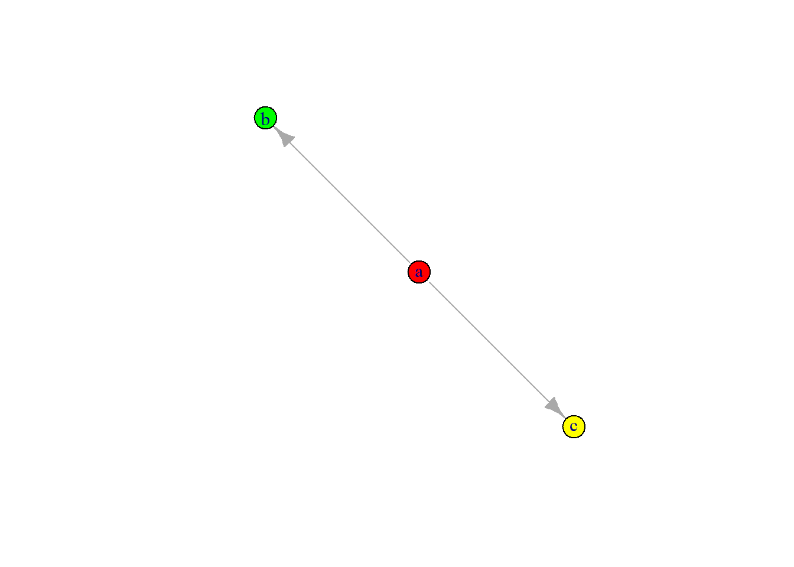

Antecedentes
Definición y generalidades de una red
Una red se define como un conjunto de elementos o nodos, que denotaré como \(V\), que se conectan entre sí mediante aristas representadas por el conjunto \(E\) [4]. \(G=(V, E)\), donde \(N=|V|\) corresponde al conjunto de nodos que componen la red, y \(L=|E|\) al conjunto de aristas que conectan los nodos o vértices [4].
\[V=\left \{ i|i\in \left \{ 1,2,...,N \right. \right.\left. \left. \right \} \right \}\]
La información de las conexiones entre los nodos se contiene dentro de una matriz de adyacencia \(NxN\), donde se coloca un valor de 1 por cada interacción entre un par de nodos, y de 0 si no existe interacción entre nodos [4]. En matrices no-dirigidas las matrices son especulares, mientras que en matrices dirigidas esta propiedad se pierde [32].
\[a_{ij}=\left\{\begin{matrix} 1 \space si \space i\leftrightarrow j \\ 0 \space si \space no. \end{matrix}\right.\]
\[\begin{matrix} & \alpha_{1} & \alpha_{2} & \alpha_{3} & ... & \alpha_{n-1} & \alpha_{n}\\ \beta_{1} & 0 & 1 & 0 & ... & 1 & 1\\ \beta_{2} & 1 & 0 & 1 & ... & 0 & 1\\ \beta_{3} & 0 & 1 & 0 & ... & 1 & 0\\ \vdots & \vdots & \vdots & \vdots & \ddots & \vdots & \vdots \\ \beta_{n-1} & 1 & 0 & 1 & ... & 0 & 1 \\ \beta_{n} & 1 & 1 & 0 & ... & 1 & 0 \end{matrix}\]
Propiedades topológicas de las redes
Cada nodo de la red posee un determinado número de conexiones con otros nodos, una característica que se conoce como degree, y que se define como la sumatoria de todas las interacciones de un nodo con otros nodos de la red [33]. \[k_i=\sum_{j=1}^{N} a_{ij}\] Las interacciones entre estos nodos pueden estar o no dirigidas, así como estar o no ponderadas, como veremos a continuación. Se considera que las conexiones de una red son ponderadas, es decir, que poseen un valor numérico asociado a la fuerza de la interacción [33]. En sistemas biológicos, por ejemplo, esta ponderación podría representarse como la correlación entre grado de expresión de dos genes o la abundancia relativa de dos poblaciones bacterianas [4]. \[k_i=\sum_{j=1}^{N} \theta (a_{ij})\] Las conexiones de las redes pueden ser dirigidas, es decir, la conexión del nodo \(i\) con \(j\) no establece de forma implícita la conexión del nodo \(j\) al \(i\) [4]. Algunos ejemplos de redes no-dirigidas son las redes de regulación transcripcional o las redes de regulación por microRNA-transcritos, donde si un elemento \(x\) está regulando positiva o negativamente a un elemento \(y\), no implica que \(y\) también regule a \(x\).
Las redes no-dirigidas asumen que la interacción es bidireccional, algo que no ocurre necesariamente en las redes dirigidas, por lo que en este segundo caso la matriz de adyacencia es asimétrica [4].
\[k_{i, in}=\sum_{j=1}^{N} \theta (a_{ji})\] \[k_{i, out}=\sum_{j=1}^{N} \theta (a_{ij})\] El coeficiente de clusterización o de transitividad cuantifica la densidad de triángulos que se forman entre los vecinos de un nodo \(i\), lo cual se puede interpretar como la probabilidad de que un nodo esté interconectado con otros [34]. Para una red no dirigida, el coeficiente de clusterización se calcula de la siguiente forma.
\[C_{i}=\left\{\begin{matrix} \frac {2*(numero \space de \space triangulos \space pasando \space por \space el \space nodo \space i)}{k_{i}(k_{i}-1)} \space para \space k_{i}>1\\ 0 \space para \space k_{i}=1 \space o \space 0 \end{matrix}\right.\]
Un coeficiente de transitividad igual a 0 significa que los nodos que interactúan con el nodo \(i\), no están conectados entre sí, por lo que este valor aumenta entre mayor sea la conectividad de los nodos vecinos [1]. Un coeficiente de transitividad cercano a 1 implica que los nodos están estrechamente conectados en la región analizada, y, por lo tanto, que conforman un clúster o conjunto dentro de la red [1]. En sistemas biológicos, como en una red de distintos genes, regiones con un coeficiente de clusterización alto podría indicar que los genes analizados estarían posiblemente involucrados en un proceso biológico común [30].

Figura 1: Las redes generadas aleatoriamente (izquierda) tienden a tener un coeficiente de clusterización significativamente menor al de las llamadas redes de mundo pequeño (derecha). Las redes de mundo pequeño se caracterizan por tener conjuntos de nodos estrechamente interconectados, a pesar de que la mayoría de sus elementos no sean vecinos entre sí. Imagen extraída de Schaeffer, 2007 [1].
El coeficiente de clusterización es una propiedad local, es decir, para cada nodo se define un valor de dicho coeficiente. Para determinar un valor global del coeficiente de clusterización de la red en su conjunto es simplemente el promedio aritmético de todos los coeficientes de clusterización.
\[C_{net}=\frac{1}{N}\sum_{i=1}^{N} C_{i}\] Al tipo de redes donde la mayoría de los nodos no son vecinos entre sí se les conoce como redes de mundo pequeño. Los primeros en idear este coeficiente fueron Watts y Strogatz en 1988, y es gracias a esta propiedad que es posible diferenciar una red aleatoria de una red de mundo pequeño [2].

Figura 2: La aleatoriedad de una red (\(p\)) es un factor importante en su arquitectura. Cuando este valor es igual a cero, los nodos poseerán exactamente el mismo número de conexiones y, por lo tanto, la distribución de su degree será uniforme. Por el contrario, cuando los valores de aleatoriedad son cercanos a uno, dicha distribución se asemeja a una curva gaussiana, donde existirán nodos que posean muchas conexiones en un extremo de la distribución, otros con un número bajo de conexiones y la mayoría con un número de conexiones cercano a la media de la red.Imagen extraída de Watts y Strogatz, 1998 [2].

Figura 3: Conforme aumenta la aleatoriedad de una red, el coeficiente de clusterización (\(C(p)\)) adquiere valores cada vez menores; al tiempo que la longitud de la red (\(L(p)\)), es decir, la distancia (cuantificada en número de aristas) más corta entre todos los posibles pares de nodos de una red, también disminuye. Imagen extraída de Watts y Strogatz, 1998 [2].
Esta característica le brinda a la red robustez, es decir, la capacidad de conservar su arquitectura ante ataques aleatorios [35]. En sistemas biológicos, como pueden ser cascadas de señalización, de suceder mutaciones aleatorias que puedan alterar el funcionamiento normal de alguna proteína involucrada en determinada ruta de señalización, es estadísticamente más probable que dicha mutación ocurra en un elemento de la red con bajo número de conexiones a que suceda en algún elemento central de la red, lo cual permite que la célula pueda continuar sus funciones biológicas con relativa normalidad [36]. En este tipo de redes unos pocos nodos poseen la mayor parte de las conexiones, mientras que la mayoría de los nodos poseen un bajo número de estas [35].
Existen diversas formas de conocer la centralidad o importancia de un nodo dentro de una red. La centralidad por degree o grado se fundamenta en el número de conexiones de los nodos, mientras que la centralidad por intermediación o betweenness otorga mayor peso a nodos que actúan como puentes entre clústers separados. La centralidad por closeness o cercanía cuantifica el promedio de las distancias más cortas de cada nodo con todos los demás. La centralidad por eigenvectores, también conocida como eigencentrality, es una medida autorreferencial de centralidad que prima la calidad de las conexiones, donde un nodo tendrá mayor relevancia si a su vez está conectado a un nodo con alta centralidad. El coeficiente de partición, por su parte, considera la distribución de las conexiones entre clústers separados. Finalmente, el PageRank es una medida de centralidad similar al degree pero empleada en redes dirigidas, y a menudo usada para determinar la importancia de páginas web.

Figura 4: A) Los hubs son nodos con un alto valor de centralidad. B) Medidas de centralidad. Imagen extraída de Farahani et al., 2019 [3].
Sin embargo, los sistemas biológicos no suelen ser entes aislados, sino que se ven afectados por su interacción con aquello que los rodea. La idea de que los componentes de una red son capaces de interactuar o relacionarse de alguna forma con los elementos de otras redes, nos adentra en el concepto de las redes múltiples (multinetworks), también conocidos como multigrafos (multigraphs) o redes multicapa (multilayer networks).
Definición y características de las redes multicapa
Una red multicapa es una red compuesta por \(M\) redes individuales cuyos elementos interactúan entre sí, constituyendo cada una de estas redes individuales una capa [37].
\[\cal{M}=\mathrm{(Y,\vec{G},\cal{G})}\]
Donde \(Y\) corresponde al conjunto de capas:
\[Y=\left \{ \alpha | \alpha \in \left \{ 1, 2, ... \space ,M \right \} \right \}\]
\(\vec{G}\) corresponde a la lista ordenada de redes que conforman cada una de las capas, donde cada elemento \(G_{\alpha}=(V_{\alpha}, E_{\alpha})\) es una red monocapa con sus propios nodos y aristas dentro de la red multicapa [37].
\[\vec{G} = (G_{1}, G_{2}, ... \space , G_{\alpha }, ... \space , G_{M})\]
Por su parte, \(\cal{G}\) representa a una matriz \(MxM\) en la cual están contenidas las interacciones entre los nodos de cada par de redes que conforman la red multicapa. Debido a que en la matriz están representadas las interacciones entre cada par de redes, podemos entender el total como un conjunto de redes bipartitas [37].
\[\cal{G} = (V_{\alpha},V_{\beta},\mathit{E_{\alpha, \beta}} )\]
Las redes multicapa se clasifican en tres categorías principales: las redes multiplex, redes temporales y redes formadas por redes [4]. Las redes multiplex son el ejemplo más sencillo de redes multicapa; estas se emplean generalmente cuando el mismo conjunto de nodos se encuentra contenido en las distintas capas, pero la interacción entre estos es distinta en cada una [4]. Las redes múltiplex son empleadas para mostrar cómo un mismo conjunto de elementos pueden interactuar entre sí de distintas formas, por lo general, asociando las aristas con un color distinto para cada tipo de interacción [38]. Por ejemplo, podríamos ejemplificar esto como un conjunto de genes que se relacionan entre sí en distintas células [30].
Por su parte, los sistemas dinámicos son aquellos donde las interacciones cambian constantemente en función del tiempo y, por lo tanto, la forma en que sus componentes están relacionados depende en gran medida del momento y las condiciones en las cuales se realiza la medición [39]. Los sistemas biológicos son por lo general sistemas dinámicos, pues estos están constantemente sometidos a cambios debidos a estímulos con el ambiente que los rodea, así como a la naturaleza cambiante de los procesos que ocurren dentro de las células. Por ejemplo, un conjunto de genes no permanecerá siempre expresado de la misma manera, sino que el grado de expresión de estos dependerá de un gran número de estímulos. Este tipo de sistemas se pueden representar mediante redes temporales, donde cada una de las capas representa una captura de las interacciones entre un conjunto de nodos en un momento determinado [39]. Las redes temporales son secuenciales, es decir, que las capas están ordenadas de modo que se suceden una detrás de otra, por lo cual una capa \(t_{i}\) solo puede interactuar con la capa siguiente \(t_{i+1}\) [40]. Este tipo de redes son similares a las redes multiplex en el sentido de que se trata del mismo conjunto de nodos entre las capas [40].
Finalmente podemos destacar las redes formadas por redes. Estas poseen importantes diferencias con respecto a los tipos de redes ya mencionados, empezando con que los nodos varían entre capa y capa; además de que los nodos de una capa no interactúan necesariamente solo con las capas adyacentes, como sí sucede con las redes multiplex o las redes temporales, sino que pueden interactuar con cualquier número de nodos en cualquiera de las otras capas [41].

Figura 5: Existen distintos tipos de redes multicapa, de las cuales podemos resaltar tres categorías: a) Redes multiplex. b) Redes temporales. c) Redes de redes. Imagen extraída de Bianconi, 2018 [4].
Debido a que las interacciones entre capas de una red multiplex están limitadas a las capas vecinas con respecto a la capa de referencia, podemos representar a una red múltiplex como una red bidimensional con conexiones de distintos tipos. En este tipo de redes los nodos de una capa solo se conectan con sus homólogos en la siguiente, además de que el conjunto de estos se mantiene en las distintas capas, variando solo las interacciones entre los nodos dentro de las mismas capas [38].

Figura 6: Las redes multiplex muestran cómo los nodos de una red pueden interactuar entre sí de distintas formas. En este ejemplo se muestran los vínculos matrimoniales y de negocios entre distintas familias nobles florentinas del siglo XV. Utilizando esta representación, podemos vislumbrar con facilidad el papel central que tenía la familia Medici tanto en el ámbito comercial como político entre la nobleza florentina. Imagen extraída de Biaconti, 2018 [5].
\[\cal{M} = \mathit{(Y,\vec{G})}\] Donde \[\vec{G} = (G_{1}, G_{2}, ... \space ,G_{\alpha}, ... \space ,G_{M})\]
Cada una de las capas de la red multiplex poseen la misma cantidad de nodos \[V = \left \{ i|i \in \left \{ 1,2,...,N \right \} \right \}\]
Sin embargo, a pesar de que las redes multiplex presentan el mismo grupo de nodos en las distintas capas, a menudo es necesario distinguir la capa en la cual se encuentra cada uno de los nodos [4]. \[V = \left \{ i_\alpha |i \in \left \{ 1,2,...,N \right \} \right \}\]
Tanto para redes múltiplex como para redes temporales, la conexión de los nodos entre pares de capas está dada por la delta de Kronecker. Ésta es una función cuya variable puede adquirir un valor de 1 en aquellos casos donde un elemento sea igual en ambos conjuntos de nodos, o en este caso en dos capas, y de 0 cuando son diferentes. Aquellos nodos que cumplen la condición de ser equivalentes entre una capa y otra se denominan nodos réplica [42].
\[\delta _{ij} = \left\{\begin{matrix} 1 \space si \space i=j \\ 0 \space si \space i\neq j \end{matrix}\right.\]
Como hemos visto previamente, la información de una red simple está contenida dentro de una matriz de adyacencia, sin embargo, en redes multicapa este modelo resulta insuficiente para contener la información de estas estructuras, razón por la cual empleamos las llamadas matrices de supra-adyacencia. Este tipo de matrices están compuestas a partir de múltiples matrices de adyacencia individuales, y contiene tanto la información referente a las interacciones dentro de las capas como las interacciones entre capas [6].

Figura 7: A la derecha se muestra la representación tridimensional de una red bipartita. La matriz de supra-adyacencia \(\bar{A}\) está compuesta a partir de la fusión de dos matrices de adyacencia simples. La primera es la matriz \(A\), que codifica las interacciones de los nodos dentro de las capas, mientras que la matriz \(C\) contiene las interacciones entre las capas. Imagen extraída de Cozzo et al., 2016 [6].
Como se puede inferir, las propiedades de las redes múltiples difieren de las redes simples. Como ya hemos visto, el degree (\(k_{i}\)) de un nodo de una red simple es un escalar, un número entero positivo que representa el número de conexiones de un nodo. En redes múltiples este valor está representado en un vector M-dimensional que contiene los valores del degree de un nodo “\(i\)” a lo largo de las \(M\) capas de la red [43].
\[k_{i} = (k_{i}^{[1]}, k_{i}^{[2]},..., k_{i}^{[M]})\] Al igual que como sucede con redes simples, la distribución del degree es una función de probabilidad \(P^{[a]}(k)\). En redes múltiples, esta función de probabilidad se define de forma independiente para cada capa [43].
\[P^{[a]}(k) = \frac{N^{[a]}(k)}{N_{a}}\] El coeficiente de clusterización en una red multiplex, al igual que sucede con las redes simples, permite conocer si existen conjuntos donde varios nodos están interconectados entre sí, sólo que, en este caso, esto también incluye las conexiones que se generan entre las capas [44]. En redes sociales, por ejemplo, esta propiedad permitirá conocer la probabilidad de que dos individuos realicen varias actividades juntos, o que dos personas en dos clases distintas tengan algún amigo en común [4]. En biología, por ejemplo, el coeficiente de clusterización podría emplearse para saber si dos genes que se sobreexpresan en distintos pacientes analizados, podrían estar involucrados en el mismo proceso [29]. El problema de la clusterización en redes múltiples es que los ciclos de longitud, los mismos que generan triángulos de nodos interconectados en redes simples, se completan en capas distintas, lo que complica su identificación [44].

Figura 8: En el extremo izquierdo de la imagen se muestra una red simple donde los dos vecinos del nodo \(i\) (marcado en rojo), están conectados entre sí. En los siguientes tres diagramas se muestran ejemplos de redes bipartitas donde, con respecto a la capa donde se encuentra el nodo \(i\), un grupo de nodos pueden no ser vecinos en dicha capa, pero si en una capa distinta, permitiendo la formación de ciclos entre ambas capas. En el extremo derecho de la imagen podemos ver un ejemplo en el cual se ejemplifica cómo estos ciclos de nodos interconectados no necesariamente se limitan a dos capas, sino que pueden extenderse a más capas. Imagen extraída de Cozzo et al., 2013 [7].
De forma similar a como hemos visto en redes simples, podemos obtener este coeficiente dividiendo el número de triángulos que se forman entre los nodos de distintas capas sobre el producto del número de vecinos (degree) de la primera y última capa (\(N_{\alpha, \gamma}\)) [7].
\[C_{i}^{[\alpha,\beta,\gamma]}=\frac{\sum_{r,s}a^{[\alpha]}_{ir}a^{[\beta]}_{rs}a^{[\gamma]}_{si}}{N_{\alpha, \gamma}}\]
Donde:
\[N_{\alpha, \gamma} = \left\{\begin{matrix} k^{[\alpha]}_{i}k^{[\gamma]}_{i} \space para \space \alpha \neq \gamma \\ k^{[\alpha]}_{i}(k^{[\alpha]}_{i}-1) \space para \space \alpha = \gamma \end{matrix}\right. \]
Así como sucede en lo referente a la transitividad, la cuantificación de otras propiedades de la red, tales como las distancias entre los nodos, difieren cuando tratamos con redes multicapa. Inferir la distancia más corta entre cualquier par de nodos implica ahora considerar las distancias entre capas \((\psi_{ij})\), además de las distancias más cortas dentro de la misma capa \((\sigma_{ij})\). La fracción resultante nos permite conocer la accesibilidad entre los nodos, una propiedad a la cual denominamos interdependencia (\(\lambda_{i}\)), cuyo valor fluctúa entre 1 y 0 [45].
\[\lambda_{i} = \sum_{i \neq j}\frac{\psi_{ij}}{\sigma_{ij}}\]
La interdependencia media de la red multicapa puede expresarse como:
\[\lambda = \frac{1}{N}\sum_{i=1}^{N}\lambda_{i}\]
Cuando \(\lambda\) posee un valor equivalente o muy cercano a 0, significa que existe una muy baja interdependencia entre las capas, ya que todas o la gran mayoría de las rutas más cortas entre cualquier par de nodos se encuentran dentro de la misma capa. Lo contrario sucede cuando \(\lambda\) adquiere valores cercanos o equivalentes a 1, la interdependencia de los nodos entre las capas es muy alta [45].
El análisis de las propiedades de la red puede arrojar indicios sobre el comportamiento del sistema en su conjunto, así como información que ayude a explicar ciertos fenómenos que ocurren cuando estudiamos ejemplos reales de sistemas complejos.
Aplicaciones de las redes multicapa
Las redes multicapa representan un enfoque relativamente nuevo en teoría de redes y en el análisis de sistemas complejos. Los sistemas complejos son aquellos que están compuestos por un número muy grande de distintos elementos que interactúan, de forma no lineal, entre sí [46]. A medida que el estudio de este tipo de sistemas avanzaba, fue evidente pronto que no se trataba de sistemas aislados, y que, por el contrario, se requería de una nueva perspectiva que ampliara nuestra capacidad para analizarlos, dando lugar al enfoque de las redes multicapa [4]. Las redes multicapa son ubicuas, podemos encontrar ejemplos en casi todo aquello que nos rodea; desde la evolución de las conexiones neuronales con respecto al tiempo, las interacciones entre el proteoma, el genoma y el transcriptoma, hasta el internet, los medios de transporte urbano en una ciudad o las interacciones entre las distintas partículas elementales [4].

Figura 9: Mediante el análisis de las propiedades de las redes múltiples a gran escala es posible obtener información sobre el comportamiento de un sistema. En el ejemplo se realizó la simulación de un modelo basado en el sistema de transporte de Zaragoza, España. a) Distribución del número de veces que los individuos pudieron llegar a su destino en el intervalo de tiempo en que se realizó la simulación. b) Distribución del tiempo de espera, la distancia recorrida y la duración del recorrido empleando dos velocidades de movimiento distintas (\(\delta\)). c) Fracción de pasajeros que usaron las distintas líneas de transporte. Este tipo de simulaciones se ha empleado para buscar alternativas que permitan mejorar la eficiencia de un sistema de transporte público. Imagen extraída de Aleta et al., 2017 [8].
Aunque las redes multicapa se estudiaron originalmente en el contexto de las ciencias sociales con el fin de representar la forma en que distintas personas establecen lazos de formas diferentes, por ejemplo, a través de las relaciones laborales, de amistad o mediante distintas redes sociales [47]; el uso de este enfoque se ha extendido a muchos otros campos, y las ciencias biológicas no han sido la excepción. Desde la neurociencia y la biología molecular hasta la ecología y la epidemiología, las redes multicapa han tenido multitud de aplicaciones dentro del campo de la biología y la medicina.

Figura 10: Una de las aplicaciones más recurrentes en biología de las redes multicapa es en el campo de la epidemiología, en donde se aplican redes temporales para predecir el comportamiento de un brote infeccioso en una población, como se muestra en esta representación de un modelo SIS. Imagen extraída de Sanz et al., 2014 [9].
Para el caso de las redes de redes podemos aludir al ejemplo de genes que interactúan entre ellos y que a su vez producen proteínas cuya interacción genera un efecto en las células, a la vez que regulan el sistema a distintos niveles: genoma, epigenoma, transcriptoma, proteoma y metaboloma. A este conjunto de biomoléculas en interacción que constituyen una célula es a lo que llamamos interactoma [30]. Una proteína producida por determinado gen puede regular positiva o negativamente a otro gen al realizar una modificación epigenética sobre este, así como un siRNA es capaz de regular la traducción a proteína de determinado transcrito. Como podemos ver con este ejemplo, la regulación de la red puede ocurrir a distintos niveles y mediante la interacción de elementos de alguna capa con cualquiera de las otras capas [10].

Figura 11: La regulación de las respuestas celulares a los estímulos ambientales puede darse a distintos niveles, desde la expresión de génica, la traducción de transcritos o la actividad de las proteínas. Las alteraciones en los mecanismos de regulación del organismo se han asociado a múltiples enfermedades, y nos han permitido profundizar nuestro conocimiento al respecto de estas. Imagen extraída de Sun y Hu, 2016 [10].
El análisis del interactoma mediante redes multicapa también ha sido útil para comprender los efectos de fármacos en los complejos procesos que ocurren dentro de una célula, pues integra los distintos niveles de regulación celular y la forma en que estos se ven alterados en respuesta a determinado medicamento [30]. De igual modo, ciertos patrones de expresión génica anormales se han asociado a distintos tipos de cáncer o a enfermedades crónico-degenerativas [31].
El mapeo de redes cerebrales mediante redes temporales ha adquirido gran importancia también. Las redes multicapa permiten representar detalladamente las interacciones sinápticas entre neuronas y su evolución ante estímulos. La gran mayoría de los estudios al respecto se han centrado en C. elegans, un nemátodo que ofrece numerosas facilidades al momento de estudiar su sistema nervioso, pues además de ser un modelo de estudio ampliamente conocido, también posee un número reducido y limitado de neuronas. Se han empleado redes múltiples para analizar la señalización aminérgica y neuro peptídica entre las 302 neuronas de C. elegans, asociando una capa distinta para cada neurotransmisor involucrado en la comunicación sináptica [48]. En humanos el enfoque de las redes múltiples se ha empleado para estudiar las relaciones entre distintas zonas del cerebro y las respuestas cerebrales en reposo mediante procedimientos no invasivos, tales como la resonancia magnética [49].
En ecología, el enfoque de las redes multicapa ha sido de suma utilidad para comprender las interacciones entre los distintos organismos que componen un ecosistema. La construcción de redes tróficas no solo ha permitido comprender mejor el flujo de materia y energía dentro de un ecosistema, sino también la importancia de las relaciones simbióticas y cómo estas afectan la estabilidad del ecosistema y las poblaciones [11]. Dentro de las redes tróficas se consideran distintos factores, incluyendo el peso o fuerza de la interacción y el tipo de esta (mutualismo, amensalismo, parasitismo, comensalismo, depredación, etc.) [50]. El análisis mediante redes temporales ha arrojado información sobre el cambio de las interacciones entre organismos y la pérdida de biodiversidad en respuesta al cambio climático, a la deforestación o a la contaminación [50].

Figura 12: En un ecosistema se dan múltiples interacciones entre distintos organismos. La estabilidad del ecosistema en sí mismo, depende en gran medida de estas interacciones, pues la extinción de una especie puede conllevar a extinciones secundarias de especies que, en mayor o menor medida, dependían de las poblaciones de la primera especie. Imagen extraída de Schleuning et al., 2020 [11].
Inferencia de redes
Hemos visto que la creación de redes temporales y redes multiplex es posible mediante la delta de Kronecker, dicha función permite conectar los nodos de una capa con sus respectivos nodos réplica en las capas adyacentes. Sin embargo, al intentar construir las redes de cada capa nos encontramos con un problema: Construir una red a partir de los datos experimentales. Como solución se han propuesto numerosos algoritmos que llevan a cabo la tarea de inferir las posibles asociaciones entre los componentes de una red partiendo de las abundancias de secuencias en las muestras, mismas que pueden asociarse a OTUs o transcritos de genes.
La forma más sencilla de generar una red a partir de una matriz de similaridad es eliminando todos aquellos elementos de la matriz cuya similitud sea demasiado débil, es decir, que se encuentre por debajo de determinado umbral [12]. A partir de la matriz resultante se genera una matriz de adyacencia, donde todos aquellos valores por encima del umbral seleccionado son considerados como conexiones entre las secuencias asociadas a algún gen o microorganismo específico, mismos que representamos como nodos dentro de la red [51].

Figura 13: El principio básico de un algoritmo de inferencia de redes es la generación de una matriz de similaridad que represente las relaciones de co-abundancia de las secuencias identificadas a partir de los datos muestrales. Cada una de las distintas secuencias encontradas serán consideradas como nodos de la futura red. Todos los valores de la matriz de similaridad que se encuentren por debajo del umbral establecido por el investigador, son descartados. A partir de los valores restantes se genera una matriz de adyacencia a partir de la cual se construye una red. Imagen extraída de Villa-Vialaneix-nathalie [12].
Un ejemplo de este método de inferencia es el algoritmo WGCNA (Weighted Gene Correlation Network Analysis), empleado en el análisis de correlaciones en redes pesadas de genes [51]. El algoritmo procesa las co-abundancias de los transcritos, expresadas en un heatmap como el peso asociado a las aristas, en un dendrograma o árbol. Esto permite clusterizar conjuntos de genes con una expresión similar entre las muestras a partir de las ramas principales del dendrograma [52].

Figura 14: El algoritmo WGCNA construye los módulos a partir de las abundancias de los transcritos en las muestras. Esto permite calcular la significancia media de cada módulo en conjunto con metadatos, como podrían ser categorías GO. Imagen extraída de Langfelder y Horvath, 2008 [13].
Sin embargo, el hecho de que dos elementos de la matriz de similaridad posean una correlación alta no implica necesariamente que ambos estén directamente relacionados. Esto implica que el método anteriormente mencionado puede llevar a falsas interpretaciones en cuanto a cómo los nodos están conectados entre sí [51]. Por ejemplo, si tenemos tres genes codificantes para tres productos (\(a\), \(b\) y \(c\)) que hemos analizado a lo largo de un centenar de muestras, y suponemos que el producto de \(a\) regula directamente a \(b\) y a \(c\), esperamos que exista una fuerte correlación entre la expresión de estos genes [12]. Sin embargo, cuando calculamos la correlación entre los genes \(b\) y \(c\), obtenemos un resultado muy parecido al de los casos anteriores, teniendo estos una correlación fuerte a pesar de no estar directamente vinculados, pero sí relacionados indirectamente mediante su mutua regulación a través del producto del gen \(a\).
##
## Attaching package: 'igraph'## The following objects are masked from 'package:stats':
##
## decompose, spectrum## The following object is masked from 'package:base':
##
## union#Gráfico de ejemplo
gA <- graph(c("a", "b", "a", "c"))
plot(gA, vertex.color=c( "red", "green", "yellow"))
#Generamos un set de datos de prueba y calculamos la correlación entre los nodos.
set.seed(2812)
a <- rnorm(100, 0, 0.1)
b <- 2*a-2+rnorm(100,0,0.1)
cor(a,b)## [1] 0.9047034## [1] 0.9056657## [1] 0.7763894
Figura 15: Como podemos observar en el ejemplo, el producto del gen \(a\) regula directamente a los productos de los genes \(b\) y \(c\), sin embargo, esto también provoca que exista una fuerte correlación entre los genes \(b\) y \(c\) a pesar de que la relación entre ambos sea en realidad indirecta.
Claramente, este tipo de correlaciones indirectas puede llevar a interpretaciones erróneas de los datos experimentales, por lo cual es necesario disponer de métodos que permitan descartar este tipo de falsos positivos. Bajo esta perspectiva, los modelos gráficos gaussianos[53], empleados para modelar las relaciones estadísticas entre variables de interés, son una herramienta útil para identificar y descartar interacciones indirectas gracias a que permiten estimar la dependencia condicional entre los nodos [12].
En el siguiente ejemplo, basado en la simulación realizada previamente, podemos observar, además de que las correlaciones tienden a ser menos fuertes que en el primer modelo, que la correlación entre \(b\) y \(c\) posee valores negativos o significativamente más pequeños con respecto a los valores obtenidos para las correlaciones entre \(a\) y los nodos \(b\) y \(c\). El modelo calcula las correlaciones parciales, es decir, la correlación entre los residuos de los modelos lineales generados a partir de las variables [12].
## [1] 0.7542552## [1] 0.756993## [1] -0.2378752Es a partir de este principio que actúan algoritmos de inferencia de redes tales como ARACNe, CLR y MRNET. Estos algoritmos, además, se combinan con estimadores de entropía con el fin de corregir los sesgos asociados al ruido y ajustar la varianza de los datos [12]. Las redes generadas a partir de ellos se conocen como redes de información mutua, que dependen de una correlación fuerte entre dos variables a partir de modelos de dependencia no-lineal, que con frecuencia se ajustan mejor a las nubes de datos que los modelos lineales. Por consiguiente, los algoritmos premian las interacciones directas sobre las indirectas, otorgando valores bajos a las correlaciones entre nodos no relacionados directamente [14]. Cabe destacar que si bien, los algoritmos previamente mencionados fueron diseñados para inferir redes de co-expresión de genes, al emplear el principio de co-abundancias para generar dichas redes también permite su potencial uso en la generación de redes ecológicas bacterianas. El algoritmo ARACNe, por ejemplo, elimina las conexiones más débiles por cada triplete de aristas [54].

Figura 16: Un gráfico de curvas PR (Precision-Recall curves) que relaciona la precisión de cada algoritmo (CLR, ARACNE y MRNET), es decir, el valor predictivo de los modelos \([TP / (TP + FP)]\) con la recuperación o sensibilidad del modelo \([TP / (TP + FN)]\). Podemos observar que el poder predictivo de los modelos disminuye con el aumento de la sensibilidad, en otras palabras, la capacidad del modelo de predecir los valores de la nube de datos disminuye conforme este se vuelve más selectivo respecto a aquellos valores que el algoritmo considera pertinente medir, al tiempo que descarta aquellos que no. Imagen extraída de Meyer et al., 2008 [14].
Se han planteado numerosos métodos para la inferencia de redes ecológicas a partir bases de datos de microbiota, estos incluyen algoritmos de inferencia de matrices de similitud y disimilitud o distancias; por lo general empleando los coeficientes de correlación de Pearson o de Spearman [55]. Ambos tipos de matrices son opuestos, pues mientras las primeras adquieren valores más altos entre mayor sea la correlación entre dos variables, las segundas lo hacen conforme aumenta la distancia entre las mismas. Sin embargo, por sí solos estos métodos carecen de la capacidad de diferenciar la presencia de correlaciones falsas, además de ser poco sensibles ante bajos números de muestra [56].
Debido a tales problemáticas se han planteado diversos modelos que buscan enfrentar las limitaciones de los primeros algoritmos. Podemos destacar el algoritmo SparCC (Sparse Correlations for Compositional data), mismo que calcula las correlaciones lineales de Pearson a partir de haber aplicado previamente una transformación logarítmica a los datos, esto con el propósito de normalizarlos y reducir así la oblicuidad que pueda presentar su distribución [15].
\[y_{ij} = log\frac{x_{i}}{x_{j}} = log(x_{i}) - log(x_{j})\] El algoritmo asume previamente que el número de componentes, ya sean estos OTUs o genes, es alto; y que la mayoría de los componentes de la red no estarán fuertemente correlacionados, aunque el algoritmo es particularmente robusto a este último supuesto. A pesar de emplear la transformación logarítmica, el algoritmo no asume que los datos tengan estrictamente una distribución normal, sino que el uso de dicha transformación está motivado sencillamente por la facilidad que implica su implementación al procesar los datos. Esto tiene la ventaja de que el valor \(y_{ij}\) contiene información de las abundancias de los componentes, al ser una razón entre cada par de nodos, además de que esta relación es independiente del resto de OTUs de la base de datos. Cabe destacar que las correlaciones en este algoritmo pueden adoptar cualquier valor real y no se limitan a valores positivos (pues considera también correlaciones negativas potencialmente asociadas a relaciones antagónicas), razón por la cual se considera un umbral para seleccionar las conexiones entre nodos [15]. Tanto la correlación de Pearson como la de Spearman asumen la linealidad de los datos, por lo que si la correlación entre dos nodos es no-lineal, el algoritmo asigna una correlación baja.

Figura 17: Empleando datos de abundancias del 16S-rRNA extraídos del HMP, se construyeron redes empleando la correlación de Pearson, a la izquierda, y el algoritmo SparCC, a la derecha. También se emplearon datos estocásticos para una tercera red, en el centro. En verde se muestran las correlaciones positivas y en rojo las correlaciones negativas. El hecho de que la correlación de Pearson haya inferido conexiones a partir de los datos simulados indica que algunas de las conexiones podrían ser realmente indirectas. Imagen extraída de Friedman y Alm, 2012 [15].
Otra metodología que ha sido empleada para la inferencia de redes ecológicas es SPIEC-EASI (SParse InversE Covariance Estimation for Ecological Association Inference), que realiza dicha tarea aplicando primero una transformación de los datos originales para luego estimar el gráfico de la red seleccionandolos por vecindad (MB) o por medio de la covarianza inversa (glasso), permitiendo en ambos casos seleccionar las conexiones que se incluirán en la red [16]. A diferencia de SparCC, que emplea como base la covarianza para estimar las conexiones, SPIEC-EASI se fundamenta en la independencia condicional, es decir, si en un par de nodos, ninguno de estos proporciona información adicional sobre el estado del otro, se les considera condicionalmente independientes. El resultado es una red no-dirigida que considera únicamente correlaciones positivas entre los OTUs [16].

Figura 18: En la imagen se simuló una base de datos con distribución binomial (b) de acuerdo con una red prediseñada (a), para luego emplear distintos algoritmos para inferir dicha red a partir de los datos simulados (c, d), probando así la fiabilidad de cada uno de estos algoritmos en contraste con el método SPIEC-EASI (e, f), siendo SPIEC-EASI el algoritmo con mayor capacidad para eliminar conexiones indirectas. Imagen extraída de Kurtz et al. 2015 [16].
Si bien los algoritmos de coocurrencia se emplean a menudo para identificar interacciones entre especies, estos no son capaces de inferir per se, asociaciones ecológicas [16]. Se considera que estos métodos son una herramienta útil para inferir potenciales interacciones entre taxones valiéndose del fundamento de que las poblaciones de cualquier organismo son dependientes de la abundancia de otros organismos, sin embargo, estas interacciones no suelen darse entre pocos organismos ni en condiciones controladas como sí ocurriría dentro de un laboratorio, sino que en un ecosistema microbiano podemos encontrar miles de taxones interactuando de distintas formas bajo condiciones variables [17]. Si bien, se consideran herramientas útiles para inferir posibles asociaciones, no pueden ser consideradas como metodologías infalibles, aunado al hecho de que la aplicación de distintos algoritmos a distintas bases de datos suele presentar importantes discrepancias en los resultados que arrojan; razón por la cual deben ser entendidas como lo que son, herramientas de inferencia [57]. Para establecer una conexión entre los componentes de una red es importante obtener información extra que permita conocer la veracidad de la correlación [17].

Figura 19: Análisis de las discrepancias en los resultados obtenidos mediante distintos algoritmos de inferencia para una misma base de datos. Se consideró para ello una red con un total de 50 componentes y dos valores para el degree promedio (\(〈k〉= 2m/n\)), donde n es el número de nodos y m el número de conexiones obtenidas. Se observa que los distintos algoritmos (a, b) presentan visibles diferencias entre los valores AUPR obtenidos (área bajo la curva PR, misma que relaciona la precisión de cada algoritmo con su sensibilidad). También podemos observar que algunos algoritmos son muy sensibles al tamaño de la red, y que a pesar de aumentar este parámetro las discrepancias entre los algoritmos no necesariamente disminuyen, por el contrario, pueden aumentar. Imagen extraída de Hirano y Takemoto, 2019 [17].
La microbiota intestinal y su impacto en la salud humana
La microbiota puede definirse como el conjunto de microorganismos (bacterias, hongos, arqueas, protozoos y virus) que proliferan y coexisten en los tejidos de un organismo multicelular. Los humanos tenemos una microbiota asociada a tejidos superficiales y cavidades; incluyendo el tracto digestivo, el tracto respiratorio, el tracto urinario, la piel, entre otras [58]. Los microorganismos que componen la microbiota poseen complejas relaciones con el huésped, a menudo como comensales o simbiontes con un papel importante para el buen funcionamiento del organismo. Estas interacciones son dinámicas y al verse alteradas pueden tener un impacto sustancial en la salud del individuo. Diversos estudios epidemiológicos, ómicos y fisiológicos (tanto en modelos animales como en estudios en humanos) han revelado que la constitución de las comunidades microbianas tiene una influencia significativa como mediadores en el desarrollo de enfermedades en respuesta a estímulos ambientales [18]. Las alteraciones en respuesta a un estilo de vida poco saludable pueden provocar que los microorganismos con relaciones simbióticas con el huésped adquieran características patogénicas en respuesta a determinado estímulo, desencadenando un cuadro clínico. La microbiota ha probado tener un papel importante en la digestión, la regulación de la respuesta inmune, la función endocrina del intestino, la inactivación de toxinas, el metabolismo de fármacos y nutrientes, y la señalización neuronal, llegando a impactar incluso el estado emocional [59].
Dada la inmensa diversidad de estilos de vida, patrones genéticos y epigenéticos, la gran variedad de taxones microbianos, y la complejidad inherente a la relación entre los tejidos y la microbiota asociada; establecer parámetros que delimiten una microbiota saludable de una que no lo es, resulta a menudo una tarea complicada. A pesar de ello, se toma como supuesto fundamental la composición y funcionamiento de la microbiota de individuos considerados sanos [60]. Para ello se toman como base las abundancias relativas de los microorganismos de interés, en lo concerniente a este documento, de las bacterias. Además, cabe destacar que el tipo de interacciones que presenta cierto grupo de microorganismos puede ser muy distinto de una especie a otra de una misma familia, o incluso de una cepa a otra de la misma especie, por lo que hacer generalizaciones al respecto puede resultar con frecuencia, contraproducente [61]. Por lo general, se considera que una microbiota más diversa está a menudo asociada a individuos sanos, pero la diversidad está también fuertemente ligada a la velocidad de tránsito intestinal, por lo que la diversidad y riqueza no pueden ser considerados como indicadores absolutos. Por ejemplo, un tránsito prolongado de la materia fecal puede contribuir a una mayor diversidad bacteriana, pero no necesariamente a una más saludable [60].
Adquirimos nuestra microbiota durante el parto, cuando nuestro organismo es colonizado por millones de microorganismos distintos. A partir de este momento, la microbiota cambia gradualmente a lo largo de nuestra vida en respuesta a diversos estímulos que van desde el tipo de alimentación, la actividad física, la exposición a determinadas sustancias o la edad. El envejecimiento, por ejemplo, se ha asociado a una reducción en la diversidad microbiana en respuesta a cambios en la actividad del sistema inmune [62]. Los microorganismos que componen la microbiota son los responsables de sintetizar metabolitos secundarios que tienen un impacto a distintos niveles en la fisiología del organismo, tales como la producción de ácidos grasos de cadena corta (AGCC), la síntesis de lipopolisacáridos (LPS), o la biosíntesis de vitaminas y aminoácidos esenciales [63]. La fiabilidad de los datos metagenómicos debe ser sustentada con información complementaria, pues por si sola aporta una cantidad de información limitada a partir de la cual no es posible obtener conclusiones, sino que esta debe estar apoyada también en el entendimiento de los mecanismos que conectan los fenómenos observados con la diversidad microbiana [64].
Cabe destacar, también, que el uso masivo de antibióticos alrededor del mundo ha modificado sustancialmente los patrones de composición de la microbiota humana, y dado que casi la totalidad de humanos han estado expuestos a estos fármacos al menos una vez en su vida, se considera que existe un sesgo importante en la percepción de lo que consideramos como una microbiota core o central [65]. De igual modo, los patrones dietéticos han sufrido importantes cambios en la mayoría de las sociedades desde la introducción de los alimentos pre-procesados, así como también modificaciones en el estilo de vida y la actividad física, el uso de probióticos y prebióticos, e intervenciones más radicales como la del uso de la fagoterapia o el trasplante de microbiota [66]. Todos estos factores, en mayor o menor medida, constituyen un sesgo en la percepción del funcionamiento de la microbiota, más aún, considerando que la implementación de las tecnologías que nos permitieron aunar en la complejidad de tales sistemas es posterior a estos eventos. En los países desarrollados, donde muchos de estos fenómenos se han presentado con una mayor extensión en la población, se ha observado una reducción gradual de la diversidad microbiana. Esta reducción incluye géneros como Bacteroides, Prevotella, Desulfovibrio, Lactobacillus y Oxalobacter, que ha su vez se ha asociado a una mayor prevalencia de enfermedades crónicas en contraposición con un aumento en los estándares de vivienda, seguridad alimentaria, acceso a servicios sanitarios e higiene [67]. Dentro de esto podemos destacar la hipótesis de la higiene, misma que estipula que la exposición limitada a antígenos y patógenos relativamente comunes durante la infancia, ha dado paso a un desarrollo deficiente del sistema inmune, provocando que este reaccione de manera anómala ante estímulos ambientales cotidianos, siendo este fenómeno particularmente asociado a la aparición de alergias y enfermedades crónico-inflamatorias. Esta respuesta inmune anómala también conlleva alteraciones en la composición de la microbiota, alteraciones que permiten retroalimentar el estado crónico-inflamatorio de los individuos afectados [68].

Figura 20: El mantenimiento de la homeostasis depende de múltiples factores tanto ambientales como genéticos que, en su conjunto, afectan la composición de la microbiota. La disbiosis, como resultado de la alteración de las poblaciones microbianas, conduce a un estado de enfermedad. Una dieta rica en fibra y baja en grasas y proteínas animales conduce a la proliferación de bacterias fermentadoras de polisacáridos, mismos que son degradados a una variedad de compuestos que, entre otras cosas, promueven la producción de moco y la función de barrera del epitelio intestinal [18]. A partir de esta fermentación se obtienen ácidos grasos de cadena corta (AGCC), tales como el butirato, el propionato y el acetato; además del aumento en la producción de metano y la disminución del pH. Los AGCCs, además de ser una fuente de energía adicional para los colonocitos, interactúan con los receptores acoplados a proteínas G de las células L enteroendocrinas: GPCR-41 y GPCR-43, que a su vez inducen la secreción de péptido YY (PYY) y de péptido-1 similar al glucagón (GLP-1), que contribuyen a la sensación de saciedad, a la liberación de insulina y a el metabolismo de la glucosa [69]. Por su parte, el butirato favorece la beta-oxidación y el consumo de oxígeno en el intestino, ayudando a mantener un ambiente anaerobio, además de la regulación de la respuesta inmune mediante la estimulación de los linfocitos T reguladores [70]. Por su parte, una dieta rica en proteínas y grasas animales, así como baja en fibra induce un estado de disbiosis, aunado a una vida sedentaria, una defecación infrecuente y el consumo recurrente de sustancias como el tabaco. Esta condición favorece la degradación de la mucosa por parte de las propias bacterias fermentadoras (en respuesta a la escasez de sustrato), la pérdida de la barrera intestinal y la filtración de compuestos de origen microbiano (PAMPs), incluyendo lipopolisacáridos (LPSs), al torrente sanguíneo, provocando un estado de inflamación que se ve agravado ante la baja producción de AGCCs [71]. Esto también contribuye a retrasar la sensación de saciedad y altera el metabolismo de la glucosa al favorecer la resistencia a la insulina. Un tránsito lento aunado a un consumo rico en grasas y proteínas promueve igualmente un metabolismo proteolítico que conlleva el aumento de aminoácidos aromáticos, ácidos grasos de cadena ramificada, fenoles, indoles, gases y aminas, que contribuyen a aumentar el pH [72]. Aunque, de igual modo, ha de notarse que la producción de indol y sus derivados a partir de la fermentación bacteriana de fibra favorece el metabolismo de la glucosa. Imagen extaída de Fan y Pedersen, 2021 [73].
La microbiota intestinal sufre cambios en individuos con obesidad. En las naciones occidentales la incidencia de obesidad ha aumentado en las últimas décadas, un fenómeno que se ha asociado al estilo de vida sedentario, alto consumo de alimentos ricos en grasas y azúcares, además del uso inadecuado y excesivo de antibióticos, que tienen un impacto en la composición de la microbiota. Se ha asociado a algunas especies productoras de ácidos grasos de cadena corta como Eubacterium ventriosum y Roseburia intestinalis con la obesidad [74]. Sin embargo, la síntesis de algunos tipos de AGCCs como el butirato, el propionato y el acetato por bacterias fermentadoras de fibra como Oscillospira y Akkermansia muciniphila, o arqueas como Methanobrevibacter smithii, se han asociado al efecto contrario [75]. De igual modo, se ha asociado la presencia de bacterias fermentadoras de glutamato como Bacteroides thetaiotaomicron con la delgadez, donde su abundancia es inversamente proporcional a la concentración sérica de glutamato [76]. Además, la obesidad también se ha asociado con una reducción en la conjugación unidireccional, es decir, la transferencia de material genético entre bacterias, además de un aumento del estrés oxidativo derivado de una reducción de la actividad de las superóxido reductasas bacterianas, efectos que parecen ser reversibles mediante trasplantes de materia fecal en ratones [77].
En individuos que padecen diabetes tipo II y prediabetes existe evidencia de una microbiota alterada con respecto a individuos sanos. Si bien esto no supone necesariamente que dicha alteración sea responsable de la resistencia a la insulina, la evidencia indica que la variación de las abundancias relativas si podrían tener un efecto indirecto sobre la secreción de insulina. Estudios en roedores indican que la hiperglucemia puede aumentar la permeabilidad de la barrera intestinal mediante la alteración de la actividad de GLUT2 en células epiteliales y el debilitamiento de las uniones estrechas, provocando una filtración de compuestos de origen bacteriano al torrente sanguíneo, lo que deriva en un estado de inflamación crónica [78]. En individuos con prediabetes se ha identificado una considerable reducción en las abundancias relativas de taxones asociados a la síntesis de butirato, especialmente en el caso de Akkermansia muciniphila, además de un aumento en poblaciones asociadas a la producción de factores proinflamatorios [79]. Cabe aclarar que el tratamiento farmacológico de la diabetes tipo II ha hecho difícil el estudio del papel de la microbiota en este padecimiento, debido a los factores de confusión derivados de los efectos que dichos fármacos puedan tener sobre las poblaciones microbianas. Por ejemplo, se ha documentado que la metformina altera las abundancias de diversos géneros bacterianos como Escherichia e Intestinibacter, aunque parece tener un impacto positivo en la producción de propionato y butirato, así como de ácidos biliares no-conjugados, induciendo así la gluconeogénesis intestinal y la consecuente reducción de la glucemia [80]. Sin embargo, experimentos en roedores libres de gérmenes han indicado que los efectos de la metformina permanecen inalterados a pesar de la ausencia de una microbiota, lo que podría indicar que los efectos de dicho fármaco sobre la microbiota podrían ser más bien modestos [81]. A pesar de la evidencia inicial, los cambios en la microbiota observados en individuos con diabetes tipo II parecen no ser específicos de dicha enfermedad, pues se han encontrado patrones similares también para el caso de otros trastornos crónicos caracterizados por una inflamación leve o clínicamente silenciosa. Además de que no se ha logrado reproducir con éxito el fenotipo de la diabetes al trasplantar materia fecal de ratones enfermos a ratones libres de gérmenes [79].
Al desbalance o cambio en las abundancias relativas normales de los taxones bacterianos de la microbiota intestinal, se le conoce como disbiosis microbiana intestinal. La disbiosis se ha relacionado a un gran número de enfermedades cardio-metabólicas, siendo una de las más frecuentes la arteriosclerosis [82]. Los individuos que padecen arteriosclerosis a menudo presentan concentraciones altas de glucosa sérica, insulina y lípidos, además de inflamación crónica de bajo grado y resistencia a la insulina, por lo que suele presentarse en personas que también padecen diabetes tipo II. Además, en casos más severos la arteriosclerosis también puede ir acompañada por cardiopatía isquémica, donde también se ha documentado los patrones de abundancias microbianas asociados a la disbiosis, Sin embargo, como igual sucede en el caso de la diabetes, el hecho de que las personas con arteriosclerosis estén fuertemente medicadas dificulta conocer cuál es el papel de la microbiota en el desarrollo de la enfermedad [83]. Estudios realizados sobre muestras fecales de individuos con enfermedades cardio-metabólicas parecen exhibir abundancias enriquecidas de bacterias de la familia Enterobacteriaceae, tales como Escherichia coli, Klebsiella spp. y Enterobacter aerogenes; en contraste con una disminución de Bacteroides spp. y Faecalibacterium prausnitzii. El cambio en dichas abundancias se ha correlacionado a un aumento en la síntesis de lipopolisacáridos, el transporte de aminoácidos, además de la síntesis de trimetilamina (TMA) y aminoácidos aromáticos como el triptófano. Por el contrario, existe una correlación inversa de la actividad de los AGCCs, especialmente de la producción del butirato, así como del metabolismo de vitaminas. En términos generales podemos aseverar que el microbioma se torna menos fermentativo al tiempo que promueve un estado de inflamación crónica leve [84]. Recientemente también se ha asociado una mayor abundancia de Ruminococcus, Acinetobacter y Veillonella spp., así como una disminución de Alistipes, Faecalibacterium y Oscillibacter spp. como potenciales marcadores de la insuficiencia cardíaca isquémica [85].
La N-óxido de trimetilamina (TMAO) se ha identificado como un factor de especial relevancia en el desarrollo de enfermedades vasculares isquémicas. La trimetilamina (TMA) se sintetiza mediante la actividad enzimática bacteriana a partir de la fosfatidilcolina, la lecitina y la l-carnitina, compuestos abundantes en una dieta a base de productos cárnicos. Cuando la TMA ingresa al flujo sanguíneo del sistema porta enterohepático, viaja al hígado donde es oxidada a TMAO [86]. Experimentos con roedores han mostrado que altas concentraciones séricas de TMAO provocan una aceleración del desarrollo de arteriosclerosis, aumentando la agregación plaquetaria y el riesgo de trombosis. Estudios con el inhibidor 3,3-dimetil-1-butanol de la síntesis de TMA han sido exitosos en reducir el riesgo de desarrollar arteriosclerosis, trombosis, infarto al miocardio, isquemia arterial y accidente cerebrovascular [87]. Cabe destacar que existen inconsistencias en cuanto a los resultados, ya que experimentos con roedores alimentados con una dieta enriquecida con l-carnitina, si bien poseen concentraciones elevadas de TMAO como se esperaría, ver reducido al tamaño de las lesiones aórticas características de la isquemia vascular, por lo que la l-carnitina podría tener un efecto benéfico en contraposición a su condición como precursor de la TMA [88]. Sin embargo, estudios recientes en ratones sugieren que estas discrepancias podrían ser el resultado de una combinación de factores genéticos, la constitución de la microbiota y la dieta, que al interactuar entre sí predisponen al individuo en mayor o menor medida a desarrollar arteriosclerosis; por lo que si bien la concentración de TMAO puede ser útil como biomarcador, no supone necesariamente el desarrollo consecuente de la patología [18].
La disbiosis intestinal también se ha relacionado al desarrollo de síndrome metabólico hepático, especialmente de hígado graso no-alcohólico (HGNA). El HGNA comprende un amplio abanico de enfermedades, siendo la esclerosis no-alcohólica la más agresiva de sus manifestaciones [88]. Pacientes con HGNA tienden a mostrar abundancias enriquecidas de Clostridium, Anaerobacter, Streptococcus, Escherichia y Lactobacillus, al tiempo que presentan poblaciones reducidas de Oscillibacter, Flavonifaractor, Odoribacter y Alistipes spp. Las proteobacterias y enterobacterias parecen tener especial relevancia en el desarrollo de la enfermedad al verse aumentadas sus abundancias relativas. Dicha relación podría ser el resultado de compuestos hepatotóxicos sintetizados por la microbiota alterada, tales como 2-butanona y 4-metil-2-pentanona, se han hallado en concentraciones anormalmente altas en individuos con HGNA [19].

Figura 21: La disbiosis microbiana intestinal se ha asociado al desarrollo de hígado graso no-alcohólico que puede incluso complicarse hasta convertirse en esteatohepatitis, es decir, hasta desarrollar un proceso necroinflamatorio del tejido hepático. La abundancia anormalmente alta de bacterias como Ruminococcus, Dorea y Streptococcus, así como la disminución en las abundancias de Oscillospira, se han propuesto como marcadores del desarrollo de este padecimiento, que podría asociarse a una mayor producción de compuestos hepatotóxicos como la 2-butanona por parte de la microbiota aberrante. Extraída de Del Chierico et al., 2017 [19].
Además, la mayor abundancia de bacterias productoras de etanol como Escherichia coli contribuye también al desarrollo de la patología. El etanol es capaz de promover la actividad del factor nuclear κB (NF-κB), asociado a la respuesta a estrés y a la regulación de la actividad inmune, y cuya activación exacerbada es capaz de provocar daño tisular, contribuir a la endotoxemia en el sistema porta enterohepático y alterar la integridad de la barrera intestinal. Esto provoca un estrés añadido en el tejido hepático, que ve comprometida su capacidad de inactivar toxinas que a su vez contribuyen a retroalimentar el estrés oxidativo sobre los hepatocitos y el daño tisular, generando un estado de inflamación crónica del tejido hepático [86]. Otras bacterias como Klebsiella pneumoniae parecen acelerar el desarrollo de la enfermedad, pero aún se requiere de una mayor investigación que ayude a esclarecer los mecanismos moleculares por los cuales la microbiota en general afecta el desarrollo de este tipo de patologías [89].
Estudios sobre la microbiota de niños con desnutrición han arrojado indicios de cambios en la microbiota con respecto a individuos sanos. La microbiota sana en la infancia temprana se caracteriza por la floración temprana de bifidobacterias como Bifidobacterium longum y Bifidobacterium pseudolongum, responsables del metabolismo de la leche materna, cuyas poblaciones después se reducen en favor de la proliferación de bacterias anaerobias. Infantes con desnutrición aguda muestran una pérdida temprana de bifidobacterias, además de una escasa diversidad bacteriana en comparación con infantes sanos. Se ha señalado que la diversidad bacteriana se puede restablecer mediante una dieta equilibrada y suplementos vitamínicos, aunque no está del todo claro hasta qué punto esto es posible y los efectos sobre la microbiota a largo plazo [20].
A pesar de que la información de la que disponemos actualmente no es suficiente como para comprender los mecanismos que conectan a la microbiota con el desarrollo de ciertas enfermedades, los estudios indican que se trata de una combinación de factores genéticos, ambientales y de la propia constitución de la microbiota, que en su conjunto dan lugar a un gran abanico de fenotipos. La propia definición de “microbiota saludable” resulta a menudo problemática debido en gran medida a la inmensa diversidad de estilos de vida y características individuales, haciendo que a menudo los datos muestran ciertas contradicciones en cuanto al difuso límite entre un estado de enfermedad y uno considerado como saludable. La compleja interacción entre las bacterias que componen la microbiota, el huésped y factores externos es aún un terreno desconocido, por lo que se requiere de mucha más investigación para comprender la relación entre tales factores y su papel en el desarrollo de patologías.
Uso de redes en la exploración de la microbiota
La interacción entre las bacterias que componen la microbiota es aún en gran medida desconocida. Las poblaciones bacterianas responden a distintos factores que afectan la abundancia de las mismas bajo condiciones determinadas y en momentos determinados. Es así que, si bien pares de bacterias muestran interacciones que pueden ser simbióticas o antagónicas en condiciones experimentales, fuera de un medio controlado estas interacciones se pueden ver alteradas por las interacciones con otras bacterias, con el tejido del huésped y por los nutrientes derivados de la dieta del propio huésped y/u otros factores externos [56]. Además podemos incluir la presencia de otras sustancias, tales como fármacos, otros organismos como parásitos, arqueas o bacteriofagos, y un gran número de variables, en su mayoría desconocidas, y que, como resultado de su efecto, afectan a las abundancias de las poblaciones [61]. Debido a la cada vez mayor evidencia sobre la importancia de la microbiota en el mantenimiento de la homeostasis, la comprensión de las relaciones inter-microbianas se ha tornado cada vez más relevante en el proceso de comprensión sobre el desarrollo de múltiples enfermedades [59].
Por lo general, la microbiota se perfila mediante la amplificación y posterior secuenciación de genes marcadores como la región variable del 16S rRNA, cuyas lecturas suelen acoplarse en unidades denominadas OTUs (unidades taxonómicas operativas), o mediante la amplificación de segmentos de grandes regiones del ADN que incluyen múltiples genes mediante técnicas como la shotgun, que permiten alcanzar resoluciones a nivel de especie o incluso de cepa. Estas posteriormente se emplean para inferir las abundancias de cada uno de los taxones en función de la cantidad de material genético amplificado, y cuya concentración responde a la abundancia absoluta de cada OTUs en la muestra [79]. Estas secuencias son posteriormente clasificadas a distintos niveles taxonómicos, gracias a lo cual podemos agrupar los OTUs a nivel de género, familia, clase, phylum y dominio. Las correlaciones altas entre dos OTUs sugieren una posible interacción entre ambos, si bien distintos algoritmos de inferencia de redes pueden mostrar resultados distintos al procesar los datos [12]. Debido a la co-ocurrencia de los OTUs, es posible identificar conjuntos o comunidades microbianas cuyos miembros están interconectados entre sí, lo que si bien no implica que interactúen directamente, si podría ser señal de que están relacionados de alguna manera o de que podrían estar involucrados en alguna actividad común, como por ejemplo la producción de AGCCs a partir de la fermentación de fibra dietética [90].
El algoritmo de co-ocurrencia WGCNA, desarrollado inicialmente para inferencia de redes de co-expresión génica, ha sido empleado también para la construcción de redes de la microbiota y la identificación de módulos de co-abundancia [91]. El uso de redes como una de múltiples herramientas bioinformáticas en la exploración de la microbiota, contribuye a abordar la gran cantidad de datos obtenidos mediante la secuenciación y facilita la comparación de múltiples bases de datos en busca de patrones que puedan servir de punto de partida para comprender más a fondo las interacciones bacterianas [92]. La importancia funcional de las comunidades dentro de las redes es aún difusa, sin embargo la evidencia parece mostrar que comunidades o clusters estrechamente interconectados son comunes en las redes microbianas, lo que sugiere que podrían tener una importancia biológica. Redes generadas mediante simulaciones por métodos bioinformáticos tienden a perder los clusters típicamente encontrados con datos reales [93]. Dentro de estas comunidades los nodos con mayor degree, que en teoría podrían corresponder a bacterias de especial relevancia dentro de la ecología de la propia microbiota, parecen estar mucho más interconectados que en el resto de la red. Además, también existe evidencia de que estas comunidades están relativamente conservadas entre individuos, aunque cabe destacar que distintos estudios también muestran discrepancias considerables en lo concerniente a este punto [94].

Figura 22: Redes de microbiota inferidas mediante el algoritmo WGCNA. A la derecha se encuentra la red inferida a partir de datos de individuos sanos, y a la izquierda la red correspondiente a pacientes con síndrome de intestino irritable. El análisis de clusterización reveló que las comunidades encontradas corresponden a conjuntos de bacterias de distintas especies que potencialmente podrían tener una relación simbiótica. En la red de individuos sanos se encontraron 4 comunidades distintas en el 87% de las iteraciones del algoritmo, mientras que en la red de individuos enfermos se encontraron 3 comunidades en el 99.9% de las iteraciones. Mientras que en las comunidades de individuos sanos abundaban géneros como Bacteroides, Bifidobacterium, Prevotella, y Ruminococcus, asociados al metabolismo fibrolítico y a la síntesis de compuestos antiinflamatorios; en el segundo caso individuos abundaban géneros como Bacteroides y Clostridium, este último género está asociado al desarrollo de gastroenteritis. Imagen modificada de Smith et al., 2013 [94].
A pesar de que las redes temporales y multiplex son herramientas relativamente recientes en la exploración de la microbiota, han probado ser de gran utilidad para comparar distintas redes. Como se ha mencionado previamente, un conjunto de bacterias no necesariamente interactúa de la misma forma bajo dos o más condiciones o periodos de tiempo distintos, por lo cual conocer en qué medida cambian las interacciones entre los nodos entre capas podría ayudar a comprender cómo la microbiota afecta y se ve afectada por los cambios ocurridos en su medio [93]. Las comunidades bacterianas no suelen permanecer estáticas ante variaciones en las condiciones de su medio, por ejemplo, durante el desarrollo de una enfermedad, en el proceso de envejecimiento, tras un cambio en la dieta o posterior a la ingesta de un fármaco. Debido a esto, algunas comunidades bacterianas tienden a ganar relevancia mientras otras la pierden, evento que tiene un impacto en la arquitectura de la red y que potencialmente puede ayudar a inferir la relevancia de las comunidades a nivel biológico [92].
El uso de redes multicapa emerge como un nuevo paradigma de la teoría de redes, como una herramienta muy útil empleada en multitud de campos, incluída la biología. Este enfoque permite comparar redes heterogéneas y analizar las diferencias entre las mismas, la conservación de módulos entre capas y la identificación de diferencias en las propiedades de los nodos entre capas. Si bien posee numerosas limitaciones dentro del marco de sus posibilidades, es una herramienta útil que puede ayudar a reconocer patrones que podrían potencialmente tener relevancia en la dinámica del sistema biológico [21].

Figura 23: Representación de la microbiota del rumen de bovinos donde se aislaron, a partir de una red original, dos comunidades específicas asociadas a la emisión de metano. Los nodos en rojo representan OTUs cuyas abundancias muestran diferencias significativas entre los individuos con alta y baja emisión de metano. Se construyó previamente una red de co-presencia, representando las interacciones mutualistas, y una de mutua exclusión, representando las interacciones antagónicas. Tal y como la hipótesis de los investigadores marcaba, no se identificaron conexiones compartidas entre ambas capas (debido a que una interacción no puede ser simultáneamente mutualista y antagónica). De igual modo, solo el 46% de los nodos era compartido entre ambas capas. Los géneros Roseburia, Pseudoramibacter, Eubacterium y Megasphaera, mostraron abundancias más bajas en individuos de alta emisión que en el caso de los de baja emisión; además de que sus correspondientes nodos estaban altamente interconectado, lo que sugiere que cumplen un papel importante en la regulación de la emisión de metano. Imagen extraída de Zheng et al., 2018 [21].
Referencias
[1] S. E. Schaeffer, “Graph clustering,” Computer science review, vol. 1, no. 1, pp. 27–64, 2007.
[2] D. J. Watts and S. H. Strogatz, “Collective dynamics of ‘small-world’networks,” nature, vol. 393, no. 6684, pp. 440–442, 1998.
[3] F. V. Farahani, W. Karwowski, and N. R. Lighthall, “Application of graph theory for identifying connectivity patterns in human brain networks: A systematic review,” frontiers in Neuroscience, vol. 13, p. 585, 2019.
[4] G. Bianconi, Multilayer networks: Structure and function. Oxford university press, 2018.
[5] J. F. Padgett and C. K. Ansell, “Robust action and the rise of the medici, 1400-1434,” American journal of sociology, vol. 98, no. 6, pp. 1259–1319, 1993.
[6] E. Cozzo, G. F. de Arruda, F. A. Rodrigues, and Y. Moreno, “Multilayer networks: Metrics and spectral properties,” in Interconnected networks, Springer, 2016, pp. 17–35.
[7] E. Cozzo et al., “Clustering coefficients in multiplex networks,” arXiv preprint arXiv:1307.6780, 2013.
[8] A. Aleta, S. Meloni, and Y. Moreno, “A multilayer perspective for the analysis of urban transportation systems,” Scientific reports, vol. 7, no. 1, pp. 1–9, 2017.
[9] J. Sanz, C.-Y. Xia, S. Meloni, and Y. Moreno, “Dynamics of interacting diseases,” Physical Review X, vol. 4, no. 4, p. 041005, 2014.
[10] Y. V. Sun and Y.-J. Hu, “Integrative analysis of multi-omics data for discovery and functional studies of complex human diseases,” Advances in genetics, vol. 93, pp. 147–190, 2016.
[11] M. Schleuning et al., “Trait-based assessments of climate-change impacts on interacting species,” Trends in Ecology & Evolution, vol. 35, no. 4, pp. 319–328, 2020.
[12] N. Villa-Vialaneix-nathalie, “An introduction to network inference and mining.”
[13] P. Langfelder and S. Horvath, “WGCNA: An r package for weighted correlation network analysis,” BMC bioinformatics, vol. 9, no. 1, pp. 1–13, 2008.
[14] P. E. Meyer, F. Lafitte, and G. Bontempi, “Minet: AR/bioconductor package for inferring large transcriptional networks using mutual information,” BMC bioinformatics, vol. 9, no. 1, pp. 1–10, 2008.
[15] J. Friedman and E. J. Alm, “Inferring correlation networks from genomic survey data,” 2012.
[16] Z. D. Kurtz, C. L. Müller, E. R. Miraldi, D. R. Littman, M. J. Blaser, and R. A. Bonneau, “Sparse and compositionally robust inference of microbial ecological networks,” PLoS computational biology, vol. 11, no. 5, p. e1004226, 2015.
[17] H. Hirano and K. Takemoto, “Difficulty in inferring microbial community structure based on co-occurrence network approaches,” BMC bioinformatics, vol. 20, no. 1, pp. 1–14, 2019.
[18] Y. Fan and O. Pedersen, “Gut microbiota in human metabolic health and disease,” Nature Reviews Microbiology, vol. 19, no. 1, pp. 55–71, 2021.
[19] F. Del Chierico et al., “Gut microbiota profiling of pediatric nonalcoholic fatty liver disease and obese patients unveiled by an integrated meta-omics-based approach,” Hepatology, vol. 65, no. 2, pp. 451–464, 2017.
[20] M. I. Smith et al., “Gut microbiomes of malawian twin pairs discordant for kwashiorkor,” Science, vol. 339, no. 6119, pp. 548–554, 2013.
[21] H. Zheng, H. Wang, R. J. Dewhurst, and R. Roehe, “Improving the inference of co-occurrence networks in the bovine rumen microbiome,” IEEE/ACM transactions on computational biology and bioinformatics, vol. 17, no. 3, pp. 858–867, 2018.
[29] L. A. Zuzek, H. E. Stanley, and L. A. Braunstein, “Epidemic model with isolation in multilayer networks,” Scientific reports, vol. 5, no. 1, pp. 1–7, 2015.
[30] A. Aleta and Y. Moreno, “Multilayer networks in a nutshell,” Annual Review of Condensed Matter Physics, vol. 10, pp. 45–62, 2019.
[31] R. Albert and A.-L. Barabási, “Statistical mechanics of complex networks,” Reviews of modern physics, vol. 74, no. 1, p. 47, 2002.
[32] M. E. Newman, A.-L. E. Barabási, and D. J. Watts, The structure and dynamics of networks. Princeton university press, 2006.
[33] Y.-Y. Liu, J.-J. Slotine, and A.-L. Barabási, “Controllability of complex networks,” nature, vol. 473, no. 7346, pp. 167–173, 2011.
[34] Y. Wang, E. Ghumare, R. Vandenberghe, and P. Dupont, “Comparison of different generalizations of clustering coefficient and local efficiency for weighted undirected graphs,” Neural computation, vol. 29, no. 2, pp. 313–331, 2017.
[35] M. Newman and G. Barkema, “Oxford university press; new york: 2010,” Networks: An Introduction.[Google Scholar].
[36] A. B. Das, “Small-world networks of prognostic genes associated with lung adenocarcinoma development,” Genomics, vol. 112, no. 6, pp. 4078–4088, 2020.
[37] S. V. Buldyrev, R. Parshani, G. Paul, H. E. Stanley, and S. Havlin, “Catastrophic cascade of failures in interdependent networks,” Nature, vol. 464, no. 7291, pp. 1025–1028, 2010.
[38] R. Kanawati, “Multiplex network mining: A brief survey.” IEEE Intell. Informatics Bull., vol. 16, no. 1, pp. 24–27, 2015.
[39] P. Holme and J. Saramäki, “Temporal networks,” Physics reports, vol. 519, no. 3, pp. 97–125, 2012.
[40] A. Barrat, M. Barthelemy, and A. Vespignani, Dynamical processes on complex networks. Cambridge university press, 2008.
[41] D. Y. Kenett, M. Perc, and S. Boccaletti, “Networks of networks–an introduction,” Chaos, Solitons & Fractals, vol. 80, pp. 1–6, 2015.
[42] S. Gomez, A. Diaz-Guilera, J. Gomez-Gardenes, C. J. Perez-Vicente, Y. Moreno, and A. Arenas, “Diffusion dynamics on multiplex networks,” Physical review letters, vol. 110, no. 2, p. 028701, 2013.
[43] J. Iacovacci, C. Rahmede, A. Arenas, and G. Bianconi, “Functional multiplex pagerank,” EPL (Europhysics Letters), vol. 116, no. 2, p. 28004, 2016.
[44] A. Lancichinetti and S. Fortunato, “Consensus clustering in complex networks,” Scientific reports, vol. 2, no. 1, pp. 1–7, 2012.
[45] J. F. Donges, H. C. Schultz, N. Marwan, Y. Zou, and J. Kurths, “Investigating the topology of interacting networks,” The European Physical Journal B, vol. 84, no. 4, pp. 635–651, 2011.
[46] Y.-Y. Liu and A.-L. Barabási, “Control principles of complex systems,” Reviews of Modern Physics, vol. 88, no. 3, p. 035006, 2016.
[47] E. Lazega and P. E. Pattison, “Multiplexity, generalized exchange and cooperation in organizations: A case study,” Social networks, vol. 21, no. 1, pp. 67–90, 1999.
[48] B. Bentley et al., “The multilayer connectome of caenorhabditis elegans,” PLoS computational biology, vol. 12, no. 12, p. e1005283, 2016.
[49] C. I. Del Genio, J. Gómez-Gardeñes, I. Bonamassa, and S. Boccaletti, “Synchronization in networks with multiple interaction layers,” Science Advances, vol. 2, no. 11, p. e1601679, 2016.
[50] O. Schweiger, J. Settele, O. Kudrna, S. Klotz, and I. Kühn, “Climate change can cause spatial mismatch of trophically interacting species,” Ecology, vol. 89, no. 12, pp. 3472–3479, 2008.
[51] A. J. Butte and I. S. Kohane, “Mutual information relevance networks: Functional genomic clustering using pairwise entropy measurements,” in Biocomputing 2000, World Scientific, 1999, pp. 418–429.
[52] B. Zhang and S. Horvath, “A general framework for weighted gene co-expression network analysis,” Statistical applications in genetics and molecular biology, vol. 4, no. 1, 2005.
[53] C. Uhler, “Gaussian graphical models: An algebraic and geometric perspective,” arXiv preprint arXiv:1707.04345, 2017.
[54] A. A. Margolin et al., “ARACNE: An algorithm for the reconstruction of gene regulatory networks in a mammalian cellular context,” in BMC bioinformatics, 2006, vol. 7, pp. 1–15.
[55] E. Z. Chen and H. Li, “A two-part mixed-effects model for analyzing longitudinal microbiome compositional data,” Bioinformatics, vol. 32, no. 17, pp. 2611–2617, 2016.
[56] M. Layeghifard, D. M. Hwang, and D. S. Guttman, “Disentangling interactions in the microbiome: A network perspective,” Trends in microbiology, vol. 25, no. 3, pp. 217–228, 2017.
[57] M. Layeghifard, D. M. Hwang, and D. S. Guttman, “Constructing and analyzing microbiome networks in r,” in Microbiome analysis, Springer, 2018, pp. 243–266.
[58] A. E. Gamiño-Arroyo, M. P. Barrios-Ceballos, L. P. C. de la Peña, F. Anaya-Velázquez, and F. Padilla-Vaca, “Flora normal, probióticos y salud humana,” Acta universitaria, vol. 15, no. 3, pp. 34–40, 2005.
[59] D. Rothschild et al., “Environment dominates over host genetics in shaping human gut microbiota,” Nature, vol. 555, no. 7695, pp. 210–215, 2018.
[60] T. Korem et al., “Growth dynamics of gut microbiota in health and disease inferred from single metagenomic samples,” Science, vol. 349, no. 6252, pp. 1101–1106, 2015.
[61] G. Falony, S. Vieira-Silva, and J. Raes, “Richness and ecosystem development across faecal snapshots of the gut microbiota,” Nature microbiology, vol. 3, no. 5, pp. 526–528, 2018.
[62] T. Yatsunenko et al., “Human gut microbiome viewed across age and geography,” nature, vol. 486, no. 7402, pp. 222–227, 2012.
[63] J. Qin et al., “A human gut microbial gene catalogue established by metagenomic sequencing,” nature, vol. 464, no. 7285, pp. 59–65, 2010.
[64] F. Bäckhed et al., “The gut microbiota as an environmental factor that regulates fat storage,” Proceedings of the national academy of sciences, vol. 101, no. 44, pp. 15718–15723, 2004.
[65] L. M. Cox and M. J. Blaser, “Antibiotics in early life and obesity,” Nature Reviews Endocrinology, vol. 11, no. 3, pp. 182–190, 2015.
[66] A. Górski et al., “Perspectives of phage therapy in non-bacterial infections,” Frontiers in Microbiology, vol. 9, p. 3306, 2019.
[67] J. C. Clemente et al., “The microbiome of uncontacted amerindians,” Science advances, vol. 1, no. 3, p. e1500183, 2015.
[68] S. A. Smits et al., “Seasonal cycling in the gut microbiome of the hadza hunter-gatherers of tanzania,” Science, vol. 357, no. 6353, pp. 802–806, 2017.
[69] A. Flint, A. Raben, J. Rehfeld, J. Holst, and A. Astrup, “The effect of glucagon-like peptide-1 on energy expenditure and substrate metabolism in humans,” International journal of obesity, vol. 24, no. 3, pp. 288–298, 2000.
[70] K. M. Maslowski et al., “Regulation of inflammatory responses by gut microbiota and chemoattractant receptor gpr43,” Nature, vol. 461, no. 7268, pp. 1282–1286, 2009.
[71] S. Macfarlane and G. T. Macfarlane, “Composition and metabolic activities of bacterial biofilms colonizing food residues in the human gut,” Applied and environmental microbiology, vol. 72, no. 9, pp. 6204–6211, 2006.
[72] W. R. Russell et al., “Major phenylpropanoid-derived metabolites in the human gut can arise from microbial fermentation of protein,” Molecular nutrition & food research, vol. 57, no. 3, pp. 523–535, 2013.
[73] V. D. de Mello et al., “Indolepropionic acid and novel lipid metabolites are associated with a lower risk of type 2 diabetes in the finnish diabetes prevention study,” Scientific reports, vol. 7, no. 1, pp. 1–12, 2017.
[74] S. Tims et al., “Microbiota conservation and bmi signatures in adult monozygotic twins,” The ISME journal, vol. 7, no. 4, pp. 707–717, 2013.
[75] U. Gophna, T. Konikoff, and H. B. Nielsen, “Oscillospira and related bacteria–from metagenomic species to metabolic features,” Environmental microbiology, vol. 19, no. 3, pp. 835–841, 2017.
[76] T. L. Miller, M. Wolin, E. C. de Macario, and A. Macario, “Isolation of methanobrevibacter smithii from human feces,” Applied and environmental microbiology, vol. 43, no. 1, pp. 227–232, 1982.
[77] V. K. Ridaura et al., “Gut microbiota from twins discordant for obesity modulate metabolism in mice,” Science, vol. 341, no. 6150, 2013.
[78] C. A. Thaiss et al., “Hyperglycemia drives intestinal barrier dysfunction and risk for enteric infection,” Science, vol. 359, no. 6382, pp. 1376–1383, 2018.
[79] K. H. Allin et al., “Aberrant intestinal microbiota in individuals with prediabetes,” Diabetologia, vol. 61, no. 4, pp. 810–820, 2018.
[80] T. Bryrup et al., “Metformin-induced changes of the gut microbiota in healthy young men: Results of a non-blinded, one-armed intervention study,” Diabetologia, vol. 62, no. 6, pp. 1024–1035, 2019.
[81] A. Adeshirlarijaney, J. Zou, H. Q. Tran, B. Chassaing, and A. T. Gewirtz, “Amelioration of metabolic syndrome by metformin associates with reduced indices of low-grade inflammation independently of the gut microbiota,” American Journal of Physiology-Endocrinology and Metabolism, vol. 317, no. 6, pp. E1121–E1130, 2019.
[82] Y. Fan et al., “Comprehensive metabolomic characterization of coronary artery diseases,” Journal of the American College of Cardiology, vol. 68, no. 12, pp. 1281–1293, 2016.
[83] E. D. Michos, J. W. McEvoy, and R. S. Blumenthal, “Lipid management for the prevention of atherosclerotic cardiovascular disease,” New England Journal of Medicine, vol. 381, no. 16, pp. 1557–1567, 2019.
[84] H. Sokol et al., “Faecalibacterium prausnitzii is an anti-inflammatory commensal bacterium identified by gut microbiota analysis of crohn disease patients,” Proceedings of the National Academy of Sciences, vol. 105, no. 43, pp. 16731–16736, 2008.
[85] X. Cui et al., “Metagenomic and metabolomic analyses unveil dysbiosis of gut microbiota in chronic heart failure patients,” Scientific reports, vol. 8, no. 1, pp. 1–15, 2018.
[86] W. Zhu et al., “Gut microbial metabolite tmao enhances platelet hyperreactivity and thrombosis risk,” Cell, vol. 165, no. 1, pp. 111–124, 2016.
[87] V. Senthong et al., “Intestinal microbiota-generated metabolite trimethylamine-n-oxide and 5-year mortality risk in stable coronary artery disease: The contributory role of intestinal microbiota in a courage-like patient cohort,” Journal of the American Heart Association, vol. 5, no. 6, p. e002816, 2016.
[88] H. L. Collins et al., “L-carnitine intake and high trimethylamine n-oxide plasma levels correlate with low aortic lesions in apoe-/- transgenic mice expressing cetp,” Atherosclerosis, vol. 244, pp. 29–37, 2016.
[89] R. Rao, A. Seth, and P. Sheth, “Recent advances in alcoholic liver disease i. Role of intestinal permeability and endotoxemia in alcoholic liver disease,” American Journal of Physiology-Gastrointestinal and Liver Physiology, vol. 286, no. 6, pp. G881–G884, 2004.
[90] M. A. Jackson et al., “Detection of stable community structures within gut microbiota co-occurrence networks from different human populations,” PeerJ, vol. 6, p. e4303, 2018.
[91] C. Lozupone et al., “Identifying genomic and metabolic features that can underlie early successional and opportunistic lifestyles of human gut symbionts,” Genome research, vol. 22, no. 10, pp. 1974–1984, 2012.
[92] R. Guimera and L. A. N. Amaral, “Cartography of complex networks: Modules and universal roles,” Journal of Statistical Mechanics: Theory and Experiment, vol. 2005, no. 2, p. P02001, 2005.
[93] V. Colizza, A. Flammini, M. A. Serrano, and A. Vespignani, “Detecting rich-club ordering in complex networks,” Nature physics, vol. 2, no. 2, pp. 110–115, 2006.
[94] S. N. Baldassano and D. S. Bassett, “Topological distortion and reorganized modular structure of gut microbial co-occurrence networks in inflammatory bowel disease,” Scientific reports, vol. 6, no. 1, pp. 1–14, 2016.